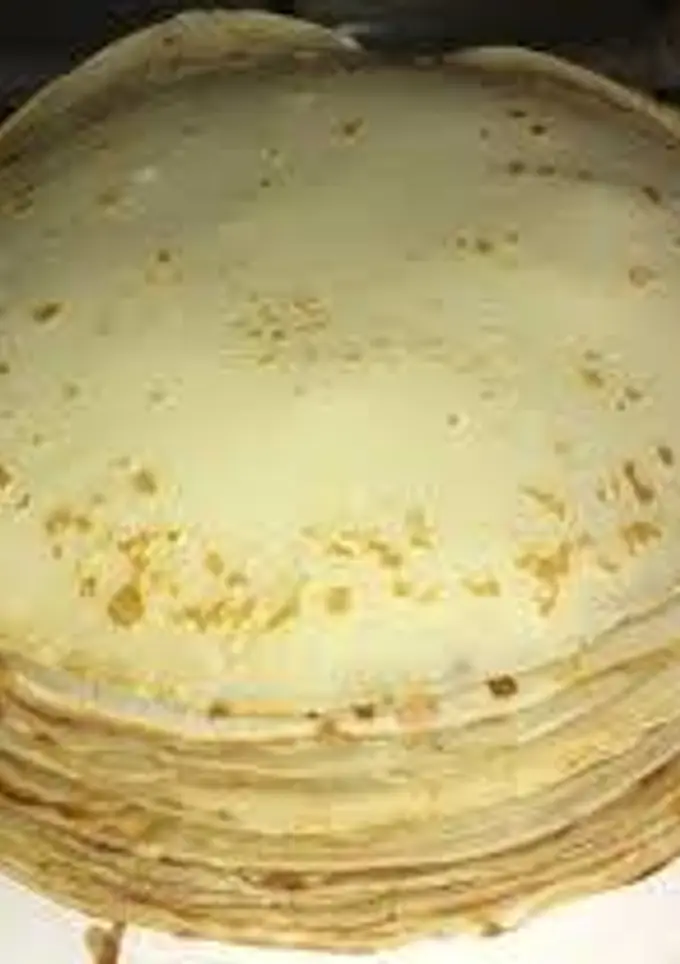

Recetas Dulces.
El final de una buena comida.
Panqueques
- Batir los huevos, agregar de a poco la harina alternando con la leche, poniendo siempre primero la harina y después la leche para que no se formen grumos.
- Agregar la sal y el aceite. Dejar descansar la preparación 20 minutos.
- Cocinarlos en una panquequera o una sartencita que no se peguen las preparaciones, rociando entre uno y otro, con rocío vegetal.
- Usar para relleno lo que más nos guste!!!!!!
Ingredientes
3 huevos
250 g harina 0000
1/2 L leche
1 cucharadita sal
1 chorrito aceite